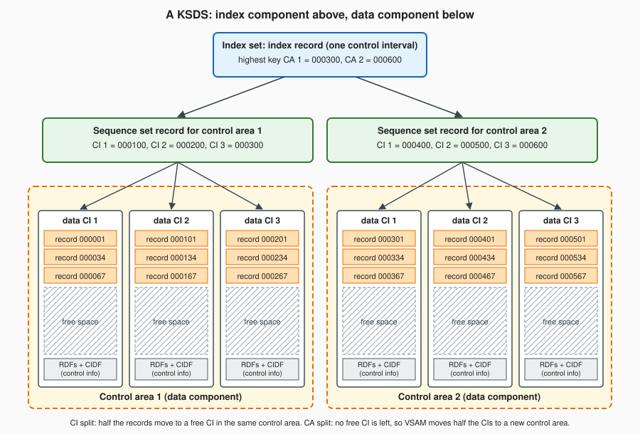

Indexed Files and VSAM
|
This content was generated with the assistance of AI and should be verified against the official documentation before being relied on in production. |
This page is written against ISO/IEC 1989:2023 (edition 3, January 2023; an upcoming 4th edition is in ballot), where indexed files come from COBOL 85 and the SUPPRESS WHEN phrase of the alternate key is listed as a COBOL 2023 addition; against IBM Enterprise COBOL for z/OS 6.5 (PTFs through September 2026) on z/OS 3.2; and against GnuCOBOL 3.2 (28 July 2023, the latest release). Every portable program on it was compiled with cobc -x -Wall on 2026-10-20 without a warning, run, and run again with -std=ibm where the text says so; the output shown is what cobc (GnuCOBOL) 3.2.0 printed. The IDCAMS and JCL on this page, and everything about VSAMDB, is "z/OS; not run here": it was checked statement by statement against the IBM documentation but never executed.
An indexed file is a file whose records are found by the value of a key, a field inside the record, instead of by their position. It is the COBOL way to keep a master file that programs read at random (one book, one member) and also read in key order (every book from number 3 on). On z/OS an indexed file is a VSAM key-sequenced data set (KSDS); on Linux, Windows and macOS under GnuCOBOL it is a pair of files managed by a database library. The source code that uses it is the same in both worlds, and that is the part this page starts with. The Circulation scenario keeps its book master BOOKMAST this way: the record layout is the BOOKREC copybook, the prime key is BOOK-ID and the status flag BOOK-STATUS is an alternate key that allows duplicates. The page continues on the file statements in File Concepts: SELECT and FD and Sequential Files, and the complete list of status codes is on File Status Codes. The related organization with slot numbers is on Relative Files.
Where the book is outdated: Taulli’s Modern Mainframe Development (2022, chapter 5) explains indexed files and VSAM with a short DEFINE CLUSTER job, and the idea is right: a key, an index, and control intervals grouped in control areas. Some details need correcting. The control information is kept per control interval, not per record: the 3-byte fields at the end of a control interval are record definition fields (RDF, not "record description"), and the 4-byte control interval definition field (CIDF) belongs to the whole interval. Control interval sizes are not limited to 4 KB to 32 KB; the IBM documentation lets VSAM choose the size unless you ask for one, and the size parameter is spelled CONTROLINTERVALSIZE (abbreviation CISZ). Free space is not consumed and "split by IDCAMS": IDCAMS only records the percentages, and VSAM itself splits a full control interval or control area later, while a program runs. A JCL statement writes PGM=IDCAMS without blanks around the equal sign. The book’s ASSIGN TO "Invoice.dat" file names are the GnuCOBOL and PC style; on z/OS the name after ASSIGN TO is a ddname of at most eight characters. The book leaves out alternate keys, the START statement, READ NEXT and READ PREVIOUS, FILE STATUS for indexed files and VSAMDB, so those come from the official documentation.
The indexed organization
A file is declared indexed by the SELECT entry in the FILE-CONTROL paragraph. The entry that every example on this page uses is the following.
SELECT BOOK-KSDS ASSIGN TO "BOOKKSDS"
ORGANIZATION IS INDEXED
ACCESS MODE IS DYNAMIC
RECORD KEY IS BOOK-ID
ALTERNATE RECORD KEY IS BOOK-STATUS WITH DUPLICATES
FILE STATUS IS WS-FS.Each clause has a fixed meaning.
| Clause | Meaning |
|---|---|
|
The file holds records located through one or more keys. Enterprise COBOL maps it to a VSAM KSDS (or to a |
|
|
|
The prime key: a field inside the record whose value is unique for every record. The key sequence is the binary collating order of the key bytes, whatever the category of the field. In Enterprise COBOL the key can be alphanumeric, numeric, alphabetic, national, UTF-8 and several edited or floating-point categories. |
|
An extra key that gives a second access path in another sequence. It must not start at the same position as the prime key or another alternate key. |
|
The alternate key may have the same value in several records. Without the phrase every alternate key value must be unique, and an attempt to add a second record with the same value fails with file status 22. |
|
A two-character item that receives the result of every operation. For VSAM files a second item may follow, see The VSAM status extension. |
The record itself is described in the FD by a copybook, here BOOKREC, so that every program that opens the file sees the same layout. The keys must be inside the record, and in a file with variable-length records the alternate key should lie within the minimum record length. On z/OS the SELECT clauses of the keys must match how the file was defined: the number of alternate keys, their position and their length must agree with the catalog entry.
A SUPPRESS WHEN phrase for the alternate key is described as a COBOL 2023 feature (the standard’s text is paywalled, so this page could not check it). It leaves records out of that key’s index when the key field holds a stated value, such as spaces, so that records without a value do not clutter the index. GnuCOBOL 3.2 accepts ALTERNATE RECORD KEY IS BOOK-ISBN WITH DUPLICATES SUPPRESS WHEN SPACES: in a test, a record whose key was spaces was not returned by a START on that key, and the program compiled without a warning even with -std=ibm. Enterprise COBOL 6.5 documents no SUPPRESS WHEN for files (the word only appears there in the JSON GENERATE and XML GENERATE statements and in the COPY statement), so code that must also run on z/OS should not use it.
Loading an indexed file
A new indexed file is created by opening it for output and writing records. With ACCESS MODE IS SEQUENTIAL the records must arrive in ascending order of the prime key; with RANDOM or DYNAMIC they may arrive in any order, at the price of more index work. The program below loads the indexed book master from the sequential BOOKMAST of the Circulation scenario (4 books, ids 1 to 4, copybook BOOKREC). It checks every WRITE with INVALID KEY and counts the records that were accepted.
IDENTIFICATION DIVISION.
PROGRAM-ID. LOADBOOK.
* Load the indexed book master from the sequential BOOKMAST.
ENVIRONMENT DIVISION.
INPUT-OUTPUT SECTION.
FILE-CONTROL.
SELECT BOOK-IN ASSIGN TO "BOOKMAST"
ORGANIZATION IS LINE SEQUENTIAL
FILE STATUS IS WS-IN-STATUS.
SELECT BOOK-KSDS ASSIGN TO "BOOKKSDS"
ORGANIZATION IS INDEXED
ACCESS MODE IS SEQUENTIAL
RECORD KEY IS BOOK-ID
ALTERNATE RECORD KEY IS BOOK-STATUS WITH DUPLICATES
FILE STATUS IS WS-KS-STATUS.
DATA DIVISION.
FILE SECTION.
FD BOOK-IN.
01 BOOK-IN-REC PIC X(60).
FD BOOK-KSDS.
COPY BOOKREC.
WORKING-STORAGE SECTION.
01 WS-IN-STATUS PIC XX.
01 WS-KS-STATUS PIC XX.
01 WS-EOF PIC X VALUE "N".
88 END-OF-BOOKS VALUE "Y".
01 WS-COUNT PIC 9(3) VALUE ZERO.
PROCEDURE DIVISION.
0000-MAIN.
OPEN INPUT BOOK-IN
OPEN OUTPUT BOOK-KSDS
PERFORM UNTIL END-OF-BOOKS
READ BOOK-IN
AT END
SET END-OF-BOOKS TO TRUE
NOT AT END
MOVE BOOK-IN-REC TO BOOK-RECORD
WRITE BOOK-RECORD
INVALID KEY
DISPLAY "WRITE failed, status "
WS-KS-STATUS
NOT INVALID KEY
ADD 1 TO WS-COUNT
END-WRITE
END-READ
END-PERFORM
CLOSE BOOK-IN BOOK-KSDS
DISPLAY WS-COUNT " records loaded, last status "
WS-KS-STATUS
STOP RUN.004 records loaded, last status 00Two details of the run are worth knowing. The WRITE statement names the record (BOOK-RECORD), not the file, and the key value written is whatever the record holds at that moment, so a program that builds records in WORKING-STORAGE must MOVE them to the record area (or use WRITE ... FROM) first. And the run created two files in the current directory, BOOKKSDS for the data and the prime index and BOOKKSDS.1 for the alternate key, because the GnuCOBOL build used here stores indexed files with the Berkeley DB library (see GnuCOBOL indexed back ends). On z/OS nothing is created by the program: the cluster must already exist, defined with IDCAMS, and only its first load is done by COBOL (see Defining a KSDS with IDCAMS).
The statements
All the file statements take an INVALID KEY and a NOT INVALID KEY phrase when the file is indexed, and end with a scope terminator (END-READ, END-START, END-WRITE, END-REWRITE, END-DELETE). The phrase runs when the statement raises the invalid key condition (status 21, 22, 23 or 24); an AT END phrase on a sequential READ is used instead for the at-end condition (status 10). If a statement has neither the phrase nor an applicable declarative, the outcome depends on the FILE STATUS clause, as described on Error Handling and Declaratives.
| Statement | What it does on an indexed file |
|---|---|
|
|
|
Positions the file for the next sequential |
|
Random read: finds the first record whose key equals the value in the key field; without |
|
Reads the next record in ascending order of the key of reference, from the position set by the last |
|
Reads backwards (descending key). GnuCOBOL 3.2 implements it (a program with |
|
Adds a record. The prime key must not exist already, and an alternate key without |
|
Replaces the record whose prime key equals that of the record area; the length may change if the file is variable-length. In sequential access mode the last statement must have been a successful |
|
Removes a record and frees its key for reuse. In random and dynamic mode the record is named by the prime key in the record area; in sequential mode the last statement must have been a successful |
|
Disconnects the file. On z/OS |
The statements that are legal for each access mode and open mode are those of the IBM table for VSAM relative and indexed files, and GnuCOBOL follows the same table in the cases tried here: WRITE needs OUTPUT (or I-O for random and dynamic access), READ and START need INPUT or I-O, and REWRITE and DELETE need I-O.
Source: Enterprise COBOL for z/OS 6.5 Programming Guide: Coding input and output statements for VSAM files; Language Reference: START statement; READ statement; REWRITE statement; DELETE statement
A dynamic-access program
The next program opens the file loaded above for I-O with dynamic access and walks through the statements in turn: a random READ that succeeds and one that fails, a START followed by READ NEXT to browse from book 3 on, a read through the alternate key BOOK-STATUS, and then a duplicate WRITE, a REWRITE and a DELETE.
IDENTIFICATION DIVISION.
PROGRAM-ID. BOOKACC.
* Random, ranged and alternate-key access to the indexed
* book master, then WRITE, REWRITE and DELETE.
ENVIRONMENT DIVISION.
INPUT-OUTPUT SECTION.
FILE-CONTROL.
SELECT BOOK-KSDS ASSIGN TO "BOOKKSDS"
ORGANIZATION IS INDEXED
ACCESS MODE IS DYNAMIC
RECORD KEY IS BOOK-ID
ALTERNATE RECORD KEY IS BOOK-STATUS WITH DUPLICATES
FILE STATUS IS WS-FS.
DATA DIVISION.
FILE SECTION.
FD BOOK-KSDS.
COPY BOOKREC.
WORKING-STORAGE SECTION.
01 WS-FS PIC XX.
01 WS-WANT-STATUS PIC X.
01 WS-MORE PIC X VALUE "Y".
88 NO-MORE VALUE "N".
PROCEDURE DIVISION.
0000-MAIN.
OPEN I-O BOOK-KSDS
PERFORM 1000-RANDOM-READ
PERFORM 2000-RANGE-BROWSE
PERFORM 3000-BY-ALTERNATE-KEY
PERFORM 4000-CHANGE-RECORDS
CLOSE BOOK-KSDS
STOP RUN.
1000-RANDOM-READ.
MOVE 2 TO BOOK-ID
READ BOOK-KSDS
INVALID KEY
DISPLAY "Book 2 not found, status " WS-FS
NOT INVALID KEY
DISPLAY "Random read: " BOOK-ID " " BOOK-TITLE
END-READ
MOVE 9 TO BOOK-ID
READ BOOK-KSDS
INVALID KEY
DISPLAY "Book 9 not found, status " WS-FS
NOT INVALID KEY
DISPLAY "Random read: " BOOK-ID " " BOOK-TITLE
END-READ.
2000-RANGE-BROWSE.
MOVE 3 TO BOOK-ID
START BOOK-KSDS KEY IS >= BOOK-ID
INVALID KEY
DISPLAY "START failed, status " WS-FS
NOT INVALID KEY
MOVE "Y" TO WS-MORE
PERFORM UNTIL NO-MORE
READ BOOK-KSDS NEXT RECORD
AT END
SET NO-MORE TO TRUE
NOT AT END
DISPLAY "Browse: " BOOK-ID " "
BOOK-TITLE
END-READ
END-PERFORM
END-START.
3000-BY-ALTERNATE-KEY.
MOVE "A" TO WS-WANT-STATUS
MOVE WS-WANT-STATUS TO BOOK-STATUS
START BOOK-KSDS KEY IS = BOOK-STATUS
INVALID KEY
DISPLAY "No active books, status " WS-FS
NOT INVALID KEY
MOVE "Y" TO WS-MORE
PERFORM UNTIL NO-MORE
READ BOOK-KSDS NEXT RECORD
AT END
SET NO-MORE TO TRUE
NOT AT END
IF BOOK-STATUS = WS-WANT-STATUS
DISPLAY "Active: " BOOK-ID " "
BOOK-TITLE
ELSE
SET NO-MORE TO TRUE
END-IF
END-READ
END-PERFORM
END-START.
4000-CHANGE-RECORDS.
MOVE 2 TO BOOK-ID
READ BOOK-KSDS
INVALID KEY
DISPLAY "Book 2 missing, status " WS-FS
END-READ
WRITE BOOK-RECORD
INVALID KEY
DISPLAY "Duplicate WRITE, status " WS-FS
END-WRITE
ADD 2 TO BOOK-COPIES
REWRITE BOOK-RECORD
INVALID KEY
DISPLAY "REWRITE failed, status " WS-FS
NOT INVALID KEY
DISPLAY "Book 2 now has " BOOK-COPIES " copies"
END-REWRITE
MOVE 4 TO BOOK-ID
DELETE BOOK-KSDS RECORD
INVALID KEY
DISPLAY "DELETE failed, status " WS-FS
NOT INVALID KEY
DISPLAY "Book 4 deleted, status " WS-FS
END-DELETE
READ BOOK-KSDS
INVALID KEY
DISPLAY "Book 4 read again, status " WS-FS
END-READ.Random read: 000002 COBOL BASICS
Book 9 not found, status 23
Browse: 000003 BATCH PROCESSING
Browse: 000004 OLD LEDGERS
Active: 000001 DATA STRUCTURES
Active: 000002 COBOL BASICS
Active: 000003 BATCH PROCESSING
Duplicate WRITE, status 22
Book 2 now has 004 copies
Book 4 deleted, status 00
Book 4 read again, status 23The run shows the rules in action. The random READ of book 9 sets status 23 and takes the INVALID KEY branch, and it does not stop the program, because the file has a FILE STATUS clause. The START with KEY IS >= sets the position at the first key not less than 3, and the following READ NEXT statements return 3 and 4 and then end. The alternate key works the same way: the program moved "A" to BOOK-STATUS, positioned with START ... KEY IS =, and read forward until the value changed, which returned the three active books (the START only positions; it does not stop at the end of the equal run, so the loop must compare the key itself). The WRITE of a record that was just read tries to create book 2 a second time and sets status 22. The REWRITE replaces book 2 with two more copies, DELETE removed book 4 by its key without a previous READ, and a later random READ of it sets status 23. The same program printed the same text with -std=ibm.
Source: Programming Guide: Example: using dynamic access with VSAM files; Reading records from a VSAM file
Three rules of the position (the file position indicator) explain what a program can rely on. A successful OPEN, START or READ sets it, and READ NEXT uses it and moves it; WRITE, REWRITE and DELETE do not change it on an ordinary indexed file (for VSAMDB files a REWRITE or DELETE after a random READ loses it). If the record at the position has been deleted meanwhile, the next READ returns the following existing record. And a numeric key is compared as alphanumeric by START: Enterprise COBOL warns that with a numeric key only EQUAL TO is safe, and that a key item shorter than the key compares only its leading bytes (the longer field is truncated on the right), which gives a generic search on a prefix of the key.
Duplicate alternate keys
WITH DUPLICATES lets many records share an alternate key value. The language reference says that, in sequential access, the records with the same alternate key value are returned in the order in which they were placed in the file, and that in random access only the first record written with that value can be retrieved. The Circulation test data cannot show the order, because the three active books were written in key order and come back as 1, 2, 3 either way, so this page does not claim more than the reference: a program that needs the duplicates in another order must put the sort criterion into the key, for example by making the alternate key a group of status and title. A program should also not assume that a random READ by a duplicate key reaches every record; it reads the first one and continues with READ NEXT, as the program above does.
Pitfalls, with the real messages
These programs are deliberately wrong or stress an error path. Their messages are the ones GnuCOBOL 3.2.0 printed.
START in random access mode. START is accepted only for sequential and dynamic access. With ACCESS MODE IS RANDOM the compiler refuses it (the program, saved as d2.cob, is the book file opened for input with ACCESS MODE IS RANDOM, followed by that START):
d2.cob:19: error: START not allowed with ACCESS MODE RANDOM
17 | PROCEDURE DIVISION.
18 | OPEN INPUT BOOK-KSDS
19 > START BOOK-KSDS KEY IS >= BOOK-ID
20 | READ BOOK-KSDS NEXT RECORD
21 | DISPLAY WS-FSSTART on a field that is not a key. The key named in START must be the prime key, an alternate key, or (on z/OS) a field that begins at the same position as one of them and is not longer than it. Naming BOOK-TITLE, which is not a key, in a program saved as d1.cob gives:
d1.cob:20: error: invalid key item
18 | OPEN INPUT BOOK-KSDS
19 | READ BOOK-KSDS KEY IS BOOK-TITLE
20 > START BOOK-KSDS KEY IS >= BOOK-TITLE
21 | CLOSE BOOK-KSDS
22 | STOP RUN.The READ BOOK-KSDS KEY IS BOOK-TITLE on line 19 raised no diagnostic of its own, but it is invalid in the same way: the language reference requires the key of a random READ to be a record key.
Loading out of order. In sequential access mode the prime keys must ascend. In a test with ACCESS MODE IS SEQUENTIAL and OPEN OUTPUT, a WRITE of book 5 followed by a WRITE of book 3 gave status 00 for the first and status 21 for the second. Status 21 is the sequence error of the invalid key class, and the statement that breaks the order is not stored. A loader fed from an unsorted file should either sort it first (see Sort and Merge) or use DYNAMIC access, and it should stop at the first status 21 instead of carrying on, because later records of the same run may also be refused.
An alternate key without WITH DUPLICATES. The program below, BAD1, defines BOOK-STATUS as an alternate key without the phrase and writes three books with statuses "A", "A" and "W":
IDENTIFICATION DIVISION.
PROGRAM-ID. BAD1.
ENVIRONMENT DIVISION.
INPUT-OUTPUT SECTION.
FILE-CONTROL.
SELECT BOOK-KSDS ASSIGN TO "BADKSDS"
ORGANIZATION IS INDEXED
ACCESS MODE IS RANDOM
RECORD KEY IS BOOK-ID
ALTERNATE RECORD KEY IS BOOK-STATUS
FILE STATUS IS WS-FS.
DATA DIVISION.
FILE SECTION.
FD BOOK-KSDS.
COPY BOOKREC.
WORKING-STORAGE SECTION.
01 WS-FS PIC XX.
PROCEDURE DIVISION.
OPEN OUTPUT BOOK-KSDS
MOVE 5 TO BOOK-ID
MOVE "A" TO BOOK-STATUS
WRITE BOOK-RECORD
DISPLAY "id 5: " WS-FS
MOVE 6 TO BOOK-ID
WRITE BOOK-RECORD
DISPLAY "id 6 same status: " WS-FS
MOVE 3 TO BOOK-ID
MOVE "W" TO BOOK-STATUS
WRITE BOOK-RECORD
DISPLAY "id 3 status W: " WS-FS
CLOSE BOOK-KSDS
STOP RUN.id 5: 00
id 6 same status: 22
id 3 status W: 00The first WRITE is fine, the second sets status 22 although its prime key (6) is new: it is the alternate key that is duplicated, and the record is not stored. The third has a new status value and is accepted. A status flag is a typical field that needs WITH DUPLICATES. On z/OS the same program would additionally fail if the alternate index had been defined UNIQUEKEY while the program says WITH DUPLICATES, or the other way round, because the definitions in the program and in the catalog must agree.
REWRITE after changing the key. In sequential access mode, REWRITE replaces the record last read, so its prime key must still be the one that was read. In a test with dynamic access, a READ of book 1 followed by a MOVE 7 TO BOOK-ID and a REWRITE returned status 21, and the file was unchanged. The key is the identity of the record: to "change" it, WRITE a new record with the new key and DELETE the old one. The language reference lists this situation under status 21 (the prime record key was changed between the READ and the next REWRITE); a DELETE of a key that is not in the file returned status 23 in the same test.
Opening a file that does not exist. An OPEN INPUT of a file that was never created gives status 35. On z/OS the equivalent is a missing cluster, or one that has never contained a record.
IDENTIFICATION DIVISION.
PROGRAM-ID. MISS.
ENVIRONMENT DIVISION.
INPUT-OUTPUT SECTION.
FILE-CONTROL.
SELECT BOOK-KSDS ASSIGN TO "NOSUCH"
ORGANIZATION IS INDEXED
ACCESS MODE IS SEQUENTIAL
RECORD KEY IS BOOK-ID
FILE STATUS IS WS-FS.
DATA DIVISION.
FILE SECTION.
FD BOOK-KSDS.
COPY BOOKREC.
WORKING-STORAGE SECTION.
01 WS-FS PIC XX.
PROCEDURE DIVISION.
OPEN INPUT BOOK-KSDS
DISPLAY "open: " WS-FS
STOP RUN.open: 35VSAM on z/OS
The VSAM (Virtual Storage Access Method) data set types are the physical side of the COBOL file organizations. The Programming Guide uses three of them: the entry-sequenced data set (ESDS) is a sequential file, the key-sequenced data set (KSDS) is an indexed file and the relative-record data set (RRDS) is a relative file. A fourth type, the linear data set (LDS), has no COBOL organization.
| VSAM type | COBOL organization | Order of records | Access | DEFINE CLUSTER keyword |
|---|---|---|---|---|
ESDS (entry-sequenced) |
|
The order in which they were written |
Sequential only; a record may be rewritten but not deleted or lengthened |
|
KSDS (key-sequenced) |
|
Collating order of the key |
Sequential, random, dynamic; alternate indexes allowed |
|
RRDS (relative-record) |
|
Relative record number |
Sequential, random, dynamic; no alternate indexes |
|
LDS (linear) |
None |
Not records at all: control intervals of 4096 to 32 768 bytes with no control information |
VSAM, data-in-virtual (DIV) or window services; not COBOL record I/O |
|
An ESDS can have alternate indexes in VSAM, but the Programming Guide says COBOL does not support them for it. The linear data set is outside what a COBOL READ can do: IBM states that, since it has no control information, it cannot be accessed as if it contained individual records. The files of the Circulation scenario that need a key, BOOKMAST and MEMBMAST, are KSDS clusters; the loan transaction file is a sequential data set (ESDS or QSAM); a slot-numbered file would be an RRDS.
Source: Programming Guide: VSAM files; z/OS 3.2 DFSMS Using Data Sets: Linear data sets; Key-sequenced data sets
Control intervals, control areas and the index
A VSAM data set is not stored as a list of records. Its unit of transfer is the control interval (CI): a block that holds logical records, free space and control information, and that is read or written whole. All the control intervals of the data component of one data set have the same length, and VSAM chooses it unless the definition requests one (the Programming Guide suggests that an average of 4 KB suits most applications, with larger sizes favouring sequential processing and smaller ones random processing). The control information at the end of a CI is a 4-byte control interval definition field (CIDF) and one or more 3-byte record definition fields (RDF) that describe the records. Control intervals are grouped into control areas (CA), the unit of space allocation and of the largest reorganization. A KSDS also has an index component made of index records, which are themselves control intervals: the lowest level, the sequence set, has one record per control area and lists, for each data CI, the highest key it holds, and the index set above it, which may have several levels, points to the sequence set records.

The figure shows a small KSDS of the book master after some growth: two control areas of three data control intervals each. A lookup of one book starts at the index set, which says which control area can hold the key (the highest key of control area 1 is 300). The sequence set record of that control area says which data CI holds it (the highest key of CI 2 is 200), and VSAM then searches inside the CI. A sequential read just follows the sequence set from one CI to the next in key order, which is why sequential access is the cheapest.
Free space and splits
When a KSDS is first loaded, the key order and the physical order of its control intervals are the same. To make room for later inserts, the definition reserves free space: a percentage of every CI and a percentage of the CIs of every CA are left empty at load time. A new record goes into its CI in key sequence, and the records behind it move into the free space; a deleted or shortened record gives its space back. When a CI has no room left, VSAM performs a CI split: it moves part of the records to a free CI of the same control area and updates the sequence set, so the physical order of the CIs no longer follows the key order. When the control area has no free CI, a CA split moves a part of its CIs to a new control area. Splits are done by VSAM while the program runs, and many CA splits slow processing. They are diagnosed with LISTCAT ALL on the cluster, and cured by reorganizing the cluster (export and import, or REPRO to a new one). Free space is the knob for a master that keeps growing: FREESPACE(10 10) reserves ten percent of each CI and ten percent of each CA, a master that only changes in place needs none, and a file that is loaded once and then only read should be defined with none at all.
Defining a KSDS with IDCAMS
A VSAM data set is defined, with its catalog entry, by the access method services utility IDCAMS before any COBOL program opens it; Enterprise COBOL processes VSAM files only after that. The following job defines the book master cluster of the Circulation scenario. It is z/OS; not run here, and it is checked against the DEFINE CLUSTER syntax of the z/OS 3.2 Access Method Services manual. The prime key BOOK-ID is 6 bytes at offset 0 of the 60-byte record.
//DEFBOOK JOB (ACCT),'DEFINE BOOKMAST',CLASS=A,MSGCLASS=X
//STEP1 EXEC PGM=IDCAMS
//SYSPRINT DD SYSOUT=*
//SYSIN DD *
DEFINE CLUSTER (NAME(USERID.CIRC.BOOKMAST) -
INDEXED -
KEYS(6 0) -
RECORDSIZE(60 60) -
FREESPACE(10 10) -
SHAREOPTIONS(2 3) -
CYLINDERS(1 1) -
VOLUMES(VOL001)) -
DATA (NAME(USERID.CIRC.BOOKMAST.DATA) -
CONTROLINTERVALSIZE(4096)) -
INDEX (NAME(USERID.CIRC.BOOKMAST.INDEX))
/*The parameters mean the following (parentheses hold the values; two values are separated by a blank or a comma).
| Parameter | Meaning |
|---|---|
|
The cluster name, a data set name. The |
|
The type: a KSDS. The other types are |
|
The prime key: its length and its offset from the start of the record. |
|
The average and maximum record length. For fixed-length records, as here, they are equal. A COBOL program with |
|
The share of each control interval, and of the control intervals of each control area, left free at load time. The default is |
|
How the cluster may be shared by concurrent users: |
|
The space in cylinders (alternatives are |
|
The size of the data control interval; omit it to let VSAM choose. |
Other parameters often seen are REUSE (the cluster can be reset and reloaded from the program by OPEN OUTPUT), SPANNED (records may span control intervals), ERASE (overwrite with zeros when deleted) and RLSENABLE (record-level sharing).
A cluster is unavailable to COBOL if it has never contained a record, even if it is defined; load it first with a COBOL program (OPEN OUTPUT, ACCESS MODE IS SEQUENTIAL, ascending keys), or with REPRO, which is usually faster for a first load. REPRO copies records from one data set to another:
//LOADBOOK EXEC PGM=IDCAMS
//SYSPRINT DD SYSOUT=*
//BOOKSEQ DD DISP=SHR,DSN=USERID.CIRC.BOOKSEQ
//SYSIN DD *
REPRO INFILE(BOOKSEQ) OUTDATASET(USERID.CIRC.BOOKMAST)
/*and PRINT lists some records to check the load, for example the first ten in character form:
//LISTBOOK EXEC PGM=IDCAMS
//SYSPRINT DD SYSOUT=*
//SYSIN DD *
PRINT INDATASET(USERID.CIRC.BOOKMAST) CHARACTER COUNT(10)
/*REPRO also empties a file (copy an empty input to it), which resets the high-used RBA so that the cluster again looks as if it had never contained a record.
Connecting the program: ddname, and the VSAM status extension
On z/OS the name in ASSIGN TO is a ddname of at most eight letters or digits, and the job binds it to the cluster:
SELECT BOOK-KSDS ASSIGN TO BOOKMAST
ORGANIZATION IS INDEXED
ACCESS MODE IS DYNAMIC
RECORD KEY IS BOOK-ID
ALTERNATE RECORD KEY IS BOOK-STATUS WITH DUPLICATES
FILE STATUS IS WS-FS WS-VSAM-CODE.//GO EXEC PGM=CIRCUPD
//BOOKMAST DD DISP=SHR,DSN=USERID.CIRC.BOOKMAST
//BOOKMAST1 DD DISP=SHR,DSN=USERID.CIRC.BOOKMAST.PATHThe program is not changed to use VSAM: the rest of the statements are those of the previous sections. The second DD is the alternate index path (see the next section); its name is the ddname of the base cluster followed by the number of the alternate key (BOOKMAST1 for the first alternate record key), as in the IBM example with MAINA and MAINA1. Both examples are z/OS; not run here.
The VSAM status extension
VSAM can say much more about a failure than two characters, so FILE STATUS accepts a second item. It is a six-byte group that VSAM fills after every operation with three 2-byte binary values: the return code, the function code and the feedback code (the IBM VSAMDB examples name them R15, FUNC and REASON):
01 WS-FS-DATA.
05 WS-FS PIC XX.
05 WS-VSAM-CODE.
10 WS-VSAM-RC PIC 9(4) BINARY.
10 WS-VSAM-FUNC PIC 9(4) BINARY.
10 WS-VSAM-FDBK PIC 9(4) BINARY.The group above is laid out like the IBM VSAMDB examples, whose status item and extension are two subordinate items under one 01. The meaning of the return, function and feedback codes belongs to File Status Codes. GnuCOBOL has no VSAM feedback code; this page did not test a second FILE STATUS item there.
Alternate indexes
An alternate key in a COBOL program is backed on z/OS by an alternate index (AIX): a VSAM data set that holds, for each alternate key value, the prime keys of the records that carry it. The program only names the key in ALTERNATE RECORD KEY; everything else is IDCAMS work, in this order.
The commands for the book status key follow (z/OS; not run here). BOOK-STATUS is one byte at offset 58 of the record (6 + 13 + 30 + 3 + 6 bytes come before it), so KEYS(1 58); it is not unique, so NONUNIQUEKEY. UPGRADE makes VSAM update the alternate index whenever the base cluster changes.
//DEFAIX EXEC PGM=IDCAMS
//SYSPRINT DD SYSOUT=*
//SYSIN DD *
DEFINE ALTERNATEINDEX (NAME(USERID.CIRC.BOOKMAST.AIX) -
RELATE(USERID.CIRC.BOOKMAST) -
KEYS(1 58) -
NONUNIQUEKEY -
UPGRADE -
RECORDSIZE(20 200) -
CYLINDERS(1 1) -
VOLUMES(VOL001))
DEFINE PATH (NAME(USERID.CIRC.BOOKMAST.PATH) -
PATHENTRY(USERID.CIRC.BOOKMAST.AIX))
BLDINDEX INDATASET(USERID.CIRC.BOOKMAST) -
OUTDATASET(USERID.CIRC.BOOKMAST.AIX)
/*The record size of an alternate index with nonunique keys must cover the key, a count of the entries and the prime keys of the duplicates, so RECORDSIZE(20 200) here shows the shape of the parameter, not a calculation: the z/OS manual explains how to compute it, and the maximum decides how many duplicate records one alternate key value can have. BLDINDEX reads every record of the base cluster and extracts the alternate key; it must run after the base cluster has been loaded, and again whenever the alternate index has been defined without UPGRADE and the base changed. The run-time option AIXBLD can build the index when the program opens the file, which costs performance and is not suited for production. Defining many alternate indexes slows updates, because every change of the base is applied through its paths; the Programming Guide advises against using many of them.
Sharing and performance
A few more points complete the z/OS picture, all from the Programming Guide. When a file is opened for I-O in RLS mode, a READ takes an exclusive record lock on a non-recoverable file that is released by the following WRITE, REWRITE or by reading a record with a different key (in dynamic access only when processing leaves the control interval); on a recoverable file the locks last until a commit or rollback. Record-level sharing (RLS) lets several jobs and CICS regions update one cluster, and with it the program must test the file status and the VSAM feedback code after every request. For speed, dynamic access is cheaper than random, sequential is cheapest; keys whose leading bytes are constant compress best; more data buffers (BUFND) help sequential work and more index buffers (BUFNI) help random work; and loading with OPEN OUTPUT and ACCESS MODE IS SEQUENTIAL keeps the defined free space, while random or dynamic loading ignores it. Line-sequential and z/OS UNIX files are not VSAM files. The record areas of reentrant programs are allocated above the 16 MB line unless DATA(24) is specified. Data sets above 4 GB need the extended-addressability attribute (SMS extended format), and no COBOL source change is needed for them.
VSAMDB: JSON documents in VSAM
Enterprise COBOL 6.5 adds a second kind of indexed file, VSAMDB. It is a VSAM KSDS defined with the DATABASE(JSON) attribute and accessed with record-level sharing, and it stores UTF-8 JSON text: one JSON document is one record, and the key is a JSON value, usually a string. The same data set can also be reached through the z/OS VSAM APIs and the EzNoSQL C, Python and Java APIs, which is what makes it a "NoSQL database on z/OS". COBOL uses the usual statements (OPEN, WRITE, START, READ, REWRITE, DELETE, CLOSE), with these differences:
-
The
ASSIGNname is prefixedVSAMDB-, andORGANIZATION IS INDEXEDand aRECORD KEYclause are required. -
The key data item may not be inside the file record; it is declared in
WORKING-STORAGE, asPIC U DYNAMIC(a UTF-8 item whose length VSAM tracks) or as a fixedPIC U BYTE-LENGTH nitem with aLENGTHphrase onRECORD KEY. -
The record is an alphanumeric or UTF-8 item (
PIC X(n),PIC U BYTE-LENGTH nor a dynamic-length item) and theFDuses the variable-length format of theRECORDclause. -
A key value must itself be valid JSON, so a string key starts and ends with a double quote. The
JSON GENERATEstatement is the way to craft one from a data item. -
STARTaccepts aPARTIALphrase that treats the key as a prefix. A randomREADfollowed byREWRITEorDELETEloses the file position, and the extra file status values 9 and A are forVSAMDBonly.
ENVIRONMENT DIVISION.
INPUT-OUTPUT SECTION.
FILE-CONTROL.
SELECT BOOK-JSON ASSIGN TO VSAMDB-BOOKJSON
ORGANIZATION IS INDEXED
ACCESS MODE IS RANDOM
RECORD KEY IS BOOK-JSON-KEY
FILE STATUS IS WS-FS WS-VSAM-CODE.
DATA DIVISION.
FILE SECTION.
FD BOOK-JSON RECORD IS VARYING IN SIZE.
01 BOOK-JSON-REC PIC U DYNAMIC.
WORKING-STORAGE SECTION.
01 BOOK-JSON-KEY PIC U DYNAMIC.
01 WS-BOOK-ID PIC X(6).The fragment above (z/OS; not run here) follows the shape of the two VSAMDB examples in the Programming Guide, with the Circulation names; the key would be produced with JSON GENERATE BOOK-JSON-KEY FROM WS-BOOK-ID NAME WS-BOOK-ID IS OMITTED, which yields the string "000002" including its quotes. PIC U DYNAMIC is a COBOL 6 feature that GnuCOBOL 3.2 does not have, so this code has no portable counterpart; its JSON statements are on JSON GENERATE and PARSE. The cluster is defined with the DATABASE(JSON) parameter of DEFINE CLUSTER, which also lets the definition name an explicit primary key field in the documents (KEYNAME), or leave the key implicit so that VSAM generates it and returns it in the key item after a WRITE. A VSAMDB data set needs z/OS RLS (and DFSMStvs for recoverable use); the details are in the Programming Guide chapter on VSAMDB and in the DFSMS manual on defining a VSAM RLS database. The GnuCOBOL 3.2 manuals do not mention VSAMDB.
GnuCOBOL indexed back ends
GnuCOBOL does not implement indexed files itself: it hands them to a file-management library chosen when the compiler runtime is built. The GnuCOBOL Programmer’s Guide says that the physical structure varies with the facility built in (Berkeley DB, VBISAM and others), and its description of file mapping options lists the indexed handlers CISAM, DISAM, VBISAM, BDB and LMDB. The manual section on indexed file packages is marked "in progress" in the 3.2 manual. The build used for every example on this page reports its handler:
$ cobc --info | grep -i "indexed file handler"
indexed file handler : BDBso its indexed files are Berkeley DB files (the runtime library links libdb-5.3), and a file with one alternate key is stored as two files, BOOKKSDS and BOOKKSDS.1. Other builds (for example distribution packages) may use another handler, and a file written by one handler cannot be read by another. Which handler a given cobc has is shown by cobc --info; this page tested only Berkeley DB, and has not built GnuCOBOL with VBISAM or LMDB. With the Berkeley DB back end, the environment variable DB_HOME names the directory for the lock files and the data files and switches on record locking for READ, REWRITE and WRITE.
Where the data files live is decided at run time through file name mapping. With the default configuration, the name in ASSIGN TO "BOOKKSDS" is resolved in this order: the environment variable DD_BOOKKSDS, then dd_BOOKKSDS, then BOOKKSDS, then the literal name itself. A relative name without a path is looked for under the directory in COB_FILE_PATH, which defaults to the current directory. This is how the same program moves from a test directory to production, and the closest thing GnuCOBOL has to a JCL DD statement. The order of the lookup comes from the Programmer’s Guide and the default of COB_FILE_PATH from the manual’s runtime configuration chapter; this page did not run a test of either.
Choosing between the organizations
An indexed file is the right tool when a program needs to find single records by a business key and also to walk them in key order, and when the volume is moderate. A sequential file is cheaper to read from start to end, as in the nightly batch of Sequential Files, and a relative file suits slot-numbered lookups. Today many installations keep the data in a database (see Embedded SQL and Db2); an indexed file remains the fast, simple choice for master files inside a batch system, and the reason a KSDS survives in so many shops. A new program should not choose it for data that other systems must query, and a design with more than one or two alternate keys is usually a sign that a relational table would serve better.
References
-
IBM Enterprise COBOL for z/OS 6.5 documentation: Language Reference (FILE-CONTROL paragraph, ORGANIZATION clause, RECORD KEY clause, ALTERNATE RECORD KEY clause, READ, START, WRITE, REWRITE, DELETE)
-
Enterprise COBOL 6.5 Programming Guide: Processing VSAM files and Processing VSAMDB files
-
IBM z/OS 3.2 documentation: DFSMS Using Data Sets: Defining VSAM data sets, DFSMS Access Method Services for Catalogs: DEFINE CLUSTER
-
Taulli, Modern Mainframe Development (O’Reilly, 2022), publisher page, chapters 3 and 5